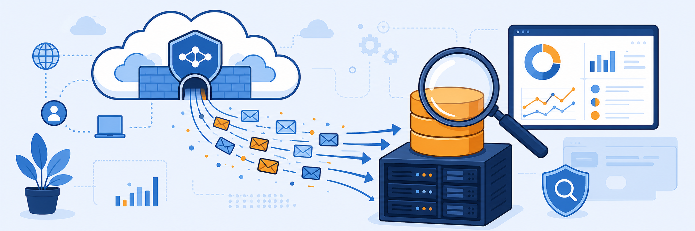

Lab 3: ZPA Log Streaming
Scenario: You are an IT Engineer tasked with centralizing security monitoring by streaming private application access logs to an on-premises security information and event management (SIEM) system. Because the SIEM consumes syslog data from local hosts, you provision a dedicated App Connector and configure the Log Streaming Service (LSS) to send real-time user activity events to a local syslog server.

In this task, you create a dedicated Log Streaming App Connector by creating a Log Streaming App Connector Group.
Note: This task gives high-level instructions because you performed these steps in Lab 2. If you need detailed guidance, refer to Task 2.1 and Task 2.2.
- Configure the App Connector Group.
- In the Experience Center, go to Infrastructure > Private Access > App Connector Groups.
- Select Add App Connector Group and enter the Name
Log Streaming(follow the remaining steps as in Task 2.1). Select Save.
- Configure the App Connector.
- Launch the Corp Log Streaming Connector VM.
- Log in to the Corp Log Streaming Connector VM by clicking SSH in the left side panel to log in automatically.
- Alternatively, use the CON option to sign in to the VM with the following credentials to generate a new token:
- Username:
admin - Password:
Zscaler1!
- Username:
- To view the token, type:
cat /etc/issue
- Use the CLI to regenerate a new authentication token by running the following commands:
- Stop the ZPA Connector service:
sudo systemctl stop zpa-connector - Switch to root user privileges:
sudo su - Delete the existing OAuth token files:
rm -rf /opt/zscaler/var/* - Restart the ZPA Connector service to generate a new OAuth token:
sudo systemctl start zpa-connector - View the new token:
cat /etc/issue
- Stop the ZPA Connector service:
- Update the token in the App Connector to deploy it.
- In the Experience Center landing page (Corp Client PC 1), go to Infrastructure > Private Access > App Connectors.
- Select Add, then enter:
- Group:
Log Streaming(the App Connector Group you created in Step 1) - Enrollment Tokens: add the token generated in Step 3 (for example,
DVQXP – NF69H)
- Group:
Note: If the generated token is not working or has expired, repeat Step 3 to generate a new one.
- Confirm that the App Connector appears in the list.
In this task, you create a log receiver to stream User Activity logs to the syslog server in the data center.
- Access the log streaming settings. On the Corp Client PC 1 VM, go to Data Explorer > Log Streaming > Log Receivers.
- Configure the log receiver.
- Select Add Log Receiver on the Log Receivers page.
- Enter the following settings on the General tab (the first step of the wizard):
- Name:
Syslog-UserActivity - Domain or IP Address:
siem.patraining.safemarch.com - TCP Port:
514 - App Connector Groups:
Log Streaming
- Name:
- Select Next.
- Enter the following settings on the Log Selection tab:
- Log Type: User Activity
- Log Template: CSV
- Log Stream Content: leave at the default values
- Select Next.
- Filter specific logs and save the receiver.
- On the Policy tab, leave the default settings, then select Next.
- On the Review page, review the configuration, then select Save.
In this task, you create an application segment and access policy to allow SSH access to the SIEM server for log verification.
Note: Use the skills you practiced in Lab 2 to complete this configuration.
- Configure an application segment for SSH access.
- On the Corp Client PC 1, go to Policies > Private Applications > Defined Application Segments.
- Create a segment with the following settings:
- Name:
SSH to SIEM - Applications:
siem.patraining.safemarch.com - Default Port Ranges: SSH
- Name:
- Select Next.
- Segment Group:
CorpApps - Server Group:
CorpServers - Select Save.
- Configure an access policy. Select Edit Policy and create a rule to allow SSH access to the SIEM server for your user account (for example,
Allow SSH to SIEM).
In this task, you monitor the syslog file on the SIEM server to verify that the Zscaler log feed is active.
- Sign in to Zscaler Client Connector (ZCC).
- On the Corp Client PC 1, in the Windows taskbar (bottom-right corner), click the Show hidden icons arrow (^).
- Select the Zscaler Client Connector icon, then click Open Zscaler.
- On the Zscaler Client Connector login page, authenticate with the student credentials you use to sign in to the console.
- Select Sign in.
- Verify the service entitlement access for Internet Security and Private Access.
- Establish an SSH connection to the SIEM server.
- On the Corp Client PC 1, open a command prompt.
- Connect to the SIEM server:
ssh zscaler@siem.patraining.safemarch.com - When prompted, enter the password:
Zscaler123! - If prompted, enter
yesto accept the host key.
- Monitor the log feed.
- Enter the following command to view the live syslog feed:
tail -f /var/log/syslog - Verify that log entries appear that include
User Activity zpa-lssafter the time field.
- Enter the following command to view the live syslog feed:
Note: If no entries appear, generate user activity by refreshing the HVAC application page you tested in Lab 2.
Note: Type exit in the command prompt to close the connection to the SIEM server.